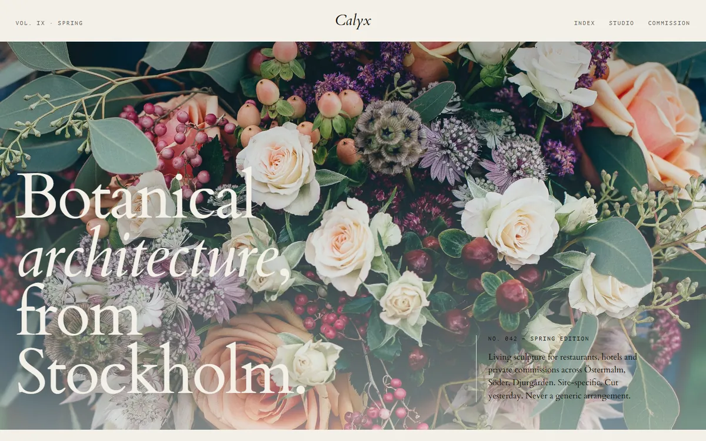

Din digitala byrå, allt på ett ställe.
Vi bygger skräddarsydda webbplatser, varumärken och digitala system som exponerar ert företag.
Boka ett möte

Vårt enda mått är perfektion.
Vi tror att alla har rätt till bra design. Därför lägger vi oss på en nivå som gör våra tjänster tillgängliga för fler, utan att kompromissa med resultatet.
Webbdesign
Skräddarsydda webbplatser som exponerar ert företag och gör det enkelt för besökare att hitta rätt. Vi utgår från hur ni faktiskt arbetar, inte från en mall.
Design
Varumärke och grafisk form som gör att sajten ser ut som företaget bakom den. Typsnitt, färg och bildspråk hänger ihop, från logotyp till knapp.
System
Vi bygger också egna digitala system, som Alunix OS och ett lagersystem. Det visar att vi klarar mer än sajter, om ert företag behöver det.
Er webbplats är nutidens visitkort.
Hör av er, så pratar vi om er sajt.
Alunix, digital byrå.